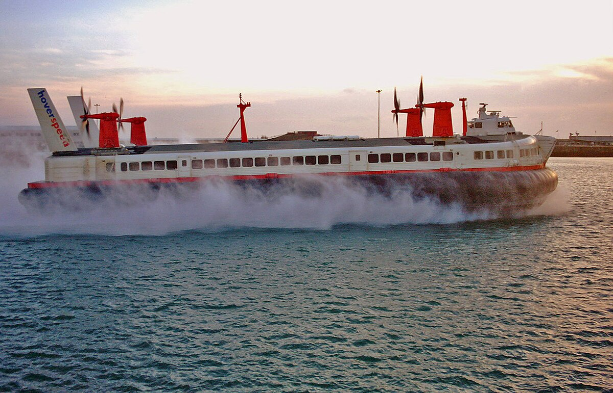
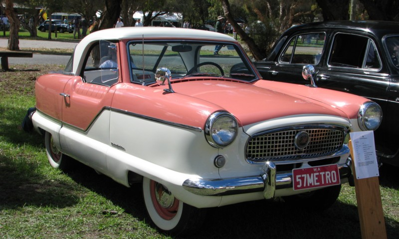
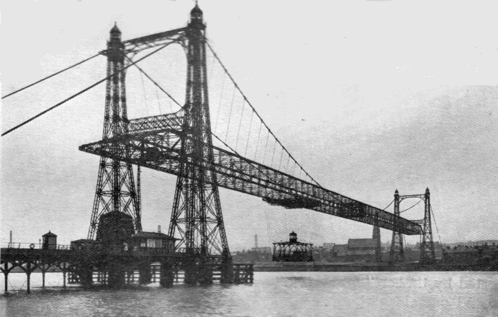
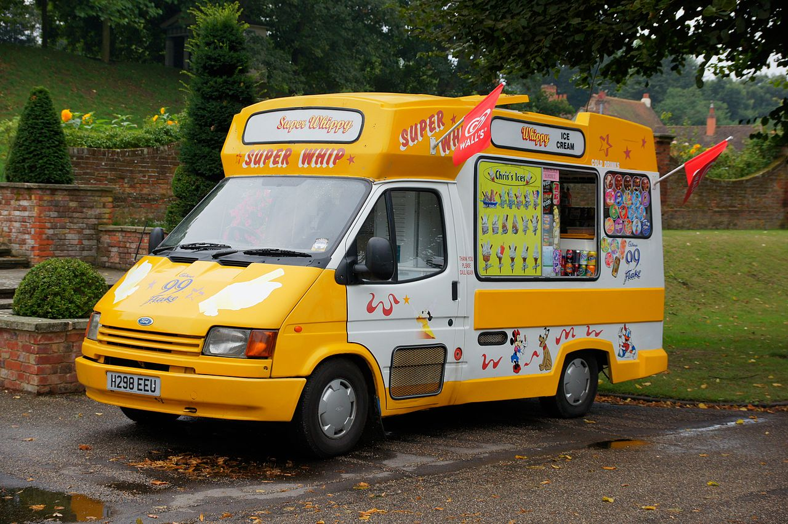
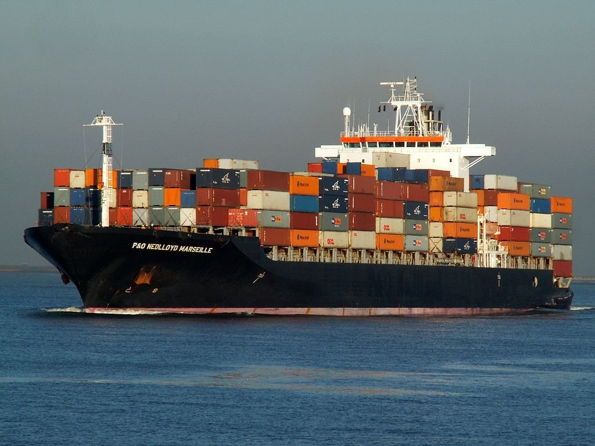
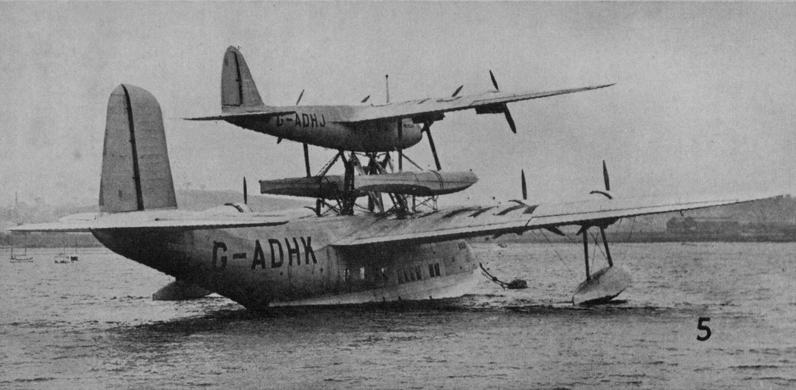
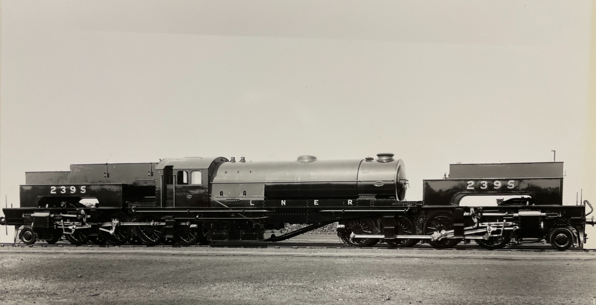
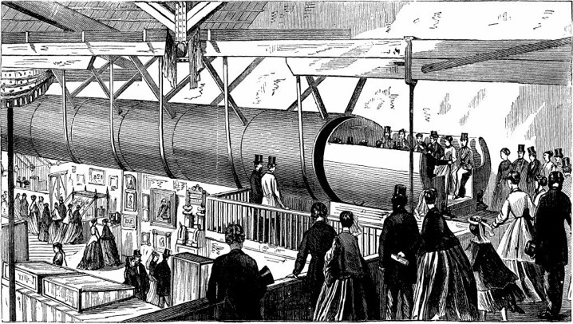
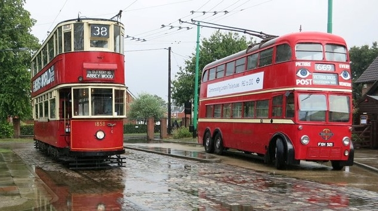

BR Standard Class 70000 Britannia passing Shoreham Lane bridge (site of the 1927 Sevenoaks Rail Crash) / Paul Frost 2024
History of Transport
The group covers all modes of transport on land, water and in the air. We have 10 meetings per year on the third Thursday morning of each month.
At each meeting there is a talk and discussion, with group participants preparing one take a year on a subject of their choice.
In the pages that follow we see a flavour of the topics covered at recent presentations.

By Andrew Berridge - Own work, CC BY-SA 2.5, https://commons.wikimedia.org/w/index.php?curid=589854
Hovercraft - the SR.N4
The SR.N4 (Saunders-Roe Nautical 4) hovercraft (also known as the Mountbatten class hovercraft) was a combined passenger and vehicle-carrying class of hovercraft. The type has the distinction of being the largest civil hovercraft to have ever been put into service
When introduced, the SR.N4 was the largest hovercraft built, designed to carry 254 passengers in two cabins besides a four-lane automobile bay which held up to 30 cars. Cars were driven from a bow ramp just forward of the wheelhouse. The first design was 40 metres (131 ft) long, weighed 190 long tons (193 t), was capable of 83 knots (154 km/h) and could cruise at over 60 knots (111 km/h).
The SR.N4s operated regular services across the English Channel between 1968 and 2000.
Here we see a Mark III SR.N4 arriving in Dover on its last commercial flight October 2000

By Davidjohnaustin at English Wikipedia - Transferred from en.wikipedia to Commons., CC BY-SA 3.0, https://commons.wikimedia.org/w/index.php?curid=95810585
Nash Metropolitan
The Nash Metropolitan is an American automobile assembled in England at Longbridge and marketed from 1953 until 1962.
While most domestic automobile makers were following a "bigger-is-better" philosophy, Nash Motor Company executives were examining the market to offer American buyers an economical transportation alternative. The Metropolitan was designed in Kenosha, Wisconsin. It was patterned from a concept car, the NXI (Nash Experimental International), that was built by Detroit-based independent designer William J. Flajole for Nash-Kelvinator. It was designed as the second car in a two car family, for Mom taking the kids to school or shopping or for Dad to drive to the railroad station to ride to work: the "commuter/shopping car" with resemblance to the big Nash, but the scale was tiny as the Met's wheelbase was shorter than the Volkswagen Beetle's.
Here we see a Metropolitan Series III Hardtop in Coral Red/Snowberry White

By Andy Dingley (scanner) - Scan from Harry Golding , ed. (1931) The Wonder Book of Engineering Wonders (2nd ed.), London: Ward, Lock & Co., pp. p. 36, Public Domain, https://commons.wikimedia.org/w/index.php?curid=12529764
Runcorn Widnes Transporter Bridge
The Widnes–Runcorn Transporter Bridge crossed the river Mersey and Manchester Ship Canal linking the towns of Runcorn and Widnes. Completed in 1905, it was Britain's first transporter bridge and the largest of its type ever built in the world. It continued in use until 22 July 1961, when it was replaced by a through arch bridge, now known as the Silver Jubilee Bridge. The transporter bridge was then demolished.

By Chris Sampson - H298EEU 240813 CPS, CC BY 2.0, https://commons.wikimedia.org/w/index.php?curid=38297680
Ice Cream Vans
There are mainly two types of ice cream vans in the United Kingdom: a hard van, which sells scoop ice cream and is only equipped with a freezer and a soft van, which has a freezer and also a soft serve "whippy" machine for serving ice cream cones and screwballs. They are usually converted from factory standard vans with the rear cut away and replaced with a fibre glass body (to reduce the weight).

By AlfvanBeem - Own work, CC0, https://commons.wikimedia.org/w/index.php?curid=19500730
The History of Containerisation
Approximately 90% of non-bulk cargo worldwide is moved by containers stacked on transport ships. Some ships can carry over 14,500 twenty-foot equivalent units (TEU), such as the Emma Mærsk, 396 m (1,299 ft) long, launched in August 2006. It has been predicted that, at some point, container ships will be constrained in size only by the depth of the Straits of Malacca, one of the world's busiest shipping lanes, linking the Indian Ocean to the Pacific Ocean. This so-called Malaccamax size constrains a ship to dimensions of 470 m (1,542 ft) in length and 60 m (197 ft) wide.
Few foresaw the extent of the influence of containerization on the shipping industry. In the 1950s, Harvard University economist Benjamin Chinitz predicted that containerization would benefit New York by allowing it to ship its industrial goods more cheaply to the Southern US than other areas, but he did not anticipate that containerization might make it cheaper to import such goods from abroad.

By Andy Dingley (scanner) - Scan from Foreword by E. Royston Pike (1938) Our Generation, London: Waverley Book Company, Public Domain, https://commons.wikimedia.org/w/index.php?curid=11657784
Piggy Back Transport - Maia and Mercury
The Short Mayo Composite was a piggy-back long-range seaplane and flying boat combination produced by Short Brothers to provide a reliable long-range air transport service to North America and, potentially, to other distant places in the British Empire and the Commonwealth.
The Short-Mayo composite project, co-designed by Mayo and Shorts chief designer Arthur Gouge, comprised the Short S.21 Maia, (G-ADHK) which was a variant of the Short "C-Class" Empire flying-boat, fitted with a trestle or pylon on the top of the fuselage to support the Short S.20 Mercury(G-ADHJ).
Brussels Tram 1348
This tram is the only survivor of a small series of 16 old vehicles that the Tramways Bruxellois kept in service after standardizing its fleet in the 1930s. It was built by the Ateliers Métallurgiques de Nivelles in 1914. It is seen here in Brussels, where it normally resides at the tram museum, participating in the 2019 festival celebrating 150 years of the tram
Belgium's first horse-drawn trams were introduced in Brussels in 1869, running from the Namur Gate to the Bois de la Cambre/Ter Kamerenbos. In 1877, a steam tram was introduced but it was not powerful enough for the hilly terrain and the tests were stopped. Simultaneously the Tramways Bruxellois experimented with a locomotive built in Tubize, but it did not work either. The components proved too fragile and this experiment was also discontinued. In 1887, experiments were made with accumulator trams, but these had a very limited range. Trolley power, used in Liège, was also tried in Brussels and in 1894 Brussels' first electric tram lines were laid from the Place Stéphanie/Stefanieplein to Uccle.

National Railway Museum (LNER official portraits)
London North Eastern Railway U1 Locomotive
The LNER Class U1 was a unique 2-8-0+0-8-2 Garratt locomotive, designed to bank heavy coal trains over the steep Worsborough Bank in South Yorkshire. It was the longest and most powerful steam locomotive in Built by Beyer, Peacock and Company for £15,395 (£0.75-1.0M today) in 1925.
The U1 faced difficulties with steaming, the harsh environment in the Silkstone tunnels, and issues with poor quality coal. Despite its power, it was not efficient enough for further development, leading to modifications and maintenance issues throughout its operational life.
After traveling approximately 425,000 miles during its 30-year service it was withdrawn in December 1955, taken to Doncaster Works and scrapped in early 1956. Despite its innovations and power, it remained a solitary, ultimately unsuccessful experiment in British steam locomotive design.

George Medhurst's Hyperloop
In 1812 an instrument maker, George Medhurst, resident of Shoreham, Kent, proposed a concept railway comprising 2 x 6' tubes, running side by side, each housing a railcar on wheels, but closely fitting to the side of the tube (around an inch clearance).
He calculated that he would need very little power to effectively suck the car along a stretch of pipe until the next station was reached. What appears to have been overlooked is the rather unfortunate side effect of passengers being repeatedly pressurised and depressurised at intervals during their journey. Escape in the case of emergency was rather overlooked too.

Trams and Trolleybuses
It was unusual to see trams and trolleybuses side by side but it's commonplace at the East Anglia Transport Museum at Carlton Colville as we see here.
Tram 1858 was built for London County Council Tramways by English Electric in 1930 designed for service on hilly routes. The London tram system used two methods for collecting electrical current in conduits and overhead; 1858 was configured for both. It operated in the Dulwich area.
1521, the London Transport trolleybus built of 1940 was of Chassisless Construction by Metro-Cammell using AEC components. It spent most of its life in the East End and was London's last trolleybus on May 9th 1962.